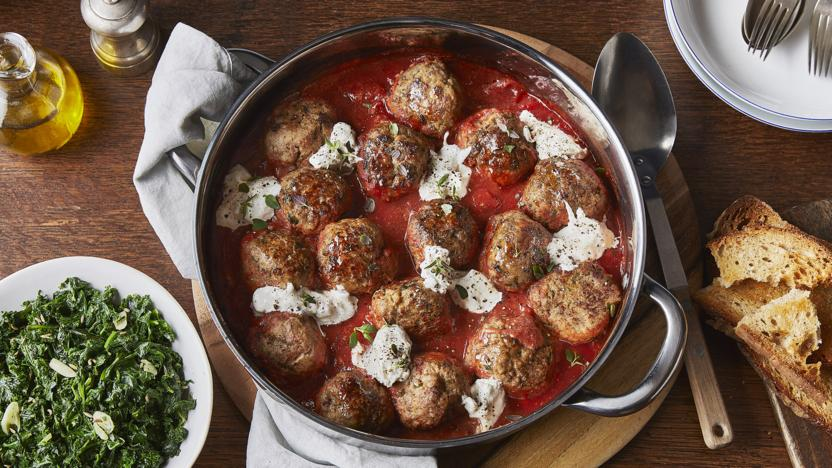

Meatballs in tomato sauce with burrata and crostini

Description
The burrata adds a touch of luxury to these baked meatballs, along with garlic-rubbed crostini and braised greens.
Ingredients
Meatballs
- 400g/14oz pork mince
- 400g/14oz beef mince
- 2 tbsp chopped fresh flat-leaf parsley leaves
- 1 garlic clove, crushed to a paste with a little sea salt
- 3 tbsp full-fat milk
- 100g/3½oz dried breadcrumbs
- 75g/2½oz parmesan, finely grated
- 3 free-range eggs
- 1 tsp sea salt
- 2 tbsp extra virgin olive oil, for greasing, frying and drizzling
Tomato sauce
- 2 tbsp extra virgin olive oil
- 1 garlic clove, finely sliced
- 1 tsp chopped fresh thyme leaves
- 1 red chilli, seeds removed, finely chopped
- 600g/1lb 5oz tomato passata
- sea salt and freshly ground black pepper
Braised greens
- 100g/3½oz wild rocket
- 250g/9oz kale
- 500g/1lb 2oz spinach
- 1 garlic clove, finely sliced
- ½ tsp fennel seeds, crushed
- sea salt and freshly ground black pepper
Burrata and crostini
- extra virgin olive oil, for drizzling
- 1 ciabatta or sourdough loaf, cut into thin slices
- 1 garlic clove, peeled and left whole, to rub
- 150g/5½oz burrata
Steps
- For the meatballs, put all the ingredients for the meatballs (except the oil) into a large bowl and combine to form a firm,
evenly distributed mixture.
- Cover your hands in olive oil, take a generous tablespoon of the mixture and roll it between your palms to form a meatball the size of a golf ball.
Repeat until you have used all the mixture - you should have 16 meatballs. Place them on a tray, wash your hands and then place the tray in the fridge to firm up for 30 minutes.
- Place a large, non-stick, ovenproof frying pan over a high heat and add a tablespoon or so of olive oil. When the oil is hot, begin browning the meatballs (in batches if necessary),
ensuring that you don't cook them completely - a little colour on the outside is perfect. Once they are all browned off, remove them from the pan and leave them to one side while you make the tomato sauce.
- Meanwhile, preheat the oven to 200C/180C Fan/Gas 6.
- To make the tomato sauce, heat the olive oil in an ovenproof pan and set it back over a medium heat. When hot, add the garlic, thyme, and chilli. Simmer for 1 minute, then add the tomato passata.
Cook gently for 15 minutes, or until the volume of the sauce has reduced by half.
- Season the sauce with salt and freshly ground black pepper and take the pan off the heat.
- Place the meatballs in the pan on top of the sauce, evenly spaced, then transfer the pan to the oven and bake for 20 minutes, or until the meatballs are cooked through. Leave to one side for 5 minutes to cool slightly (leave the oven on).
- For the braised greens, in a pan of boiling salted water, blanch the kale for 4 minutes, then using a slotted spoon, remove the kale and place the cooked kale into a large colander.
Now add the spinach to the water and blanch the spinach for 1 minute. Take it out with a slotted spoon and place on top of the kale, then finally blanch the rocket for 2 minutes, take out with a slotted spoon and add to the spinach and kale in the colander.
- Discard the blanching water and wipe the pan clean and place back on the stove on a medium heat.
- Squeeze out the excess water from the greens, then roughly chop on a chopping board. Add the extra virgin olive oil to the hot saucepan, then add the sliced garlic and crushed fennel seeds.
Cook gently for 1 minute, then add the chopped blanched greens, cook for 2 minutes and season with sea salt and black pepper. Set aside.
- For the burrata and crostini, drizzle a little oil over the ciabatta slices and sprinkle them with some sea salt. Place on a baking tray and bake in the hot oven for 4 minutes, or until crisp, then rub them all over with the garlic clove.
- Meanwhile, finely chop the burrata, then use a spoon to drop dollops all over the baked meatballs.
- Give everything a sprinkle of sea salt and a good grinding of black pepper, then serve in the middle of the table alongside the crostini and let everyone help themselves. Serve with the braised greens.